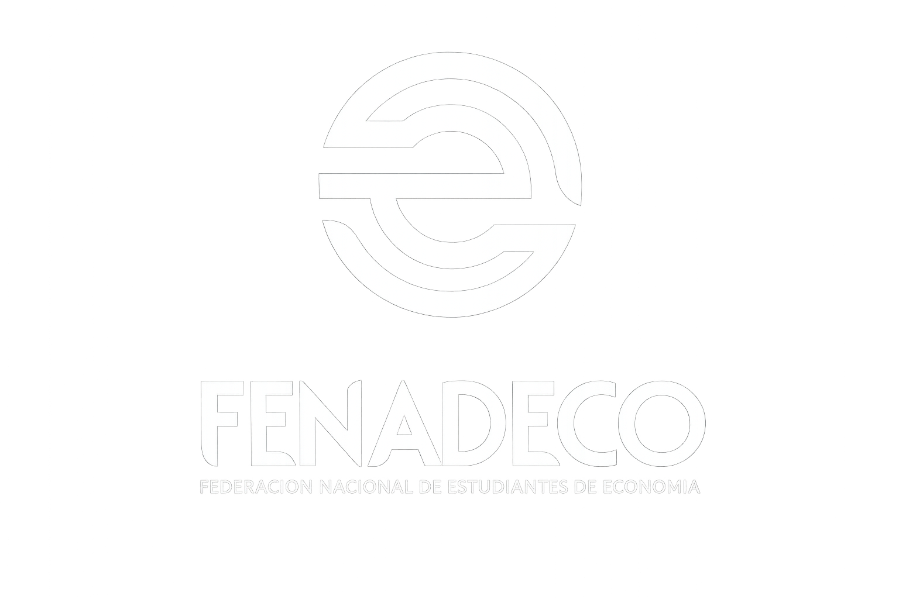

Universidad de Nariño · Programa de Economía
Formato: Karl Popper
Inscribir mi equipoInvitamos a todos los estudiantes del programa a participar en esta jornada de análisis técnico y argumentación sobre los retos del desarrollo sostenible.
Diligencia el formulario oficial de Microsoft Forms para registrar a tu equipo. No pierdas la oportunidad de potenciar tus habilidades analíticas.
🔗 Formulario de Inscripción